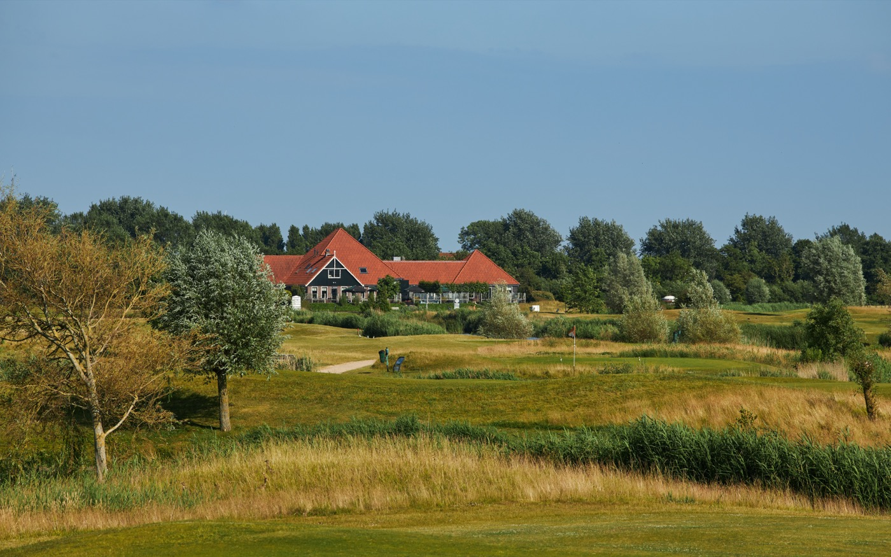
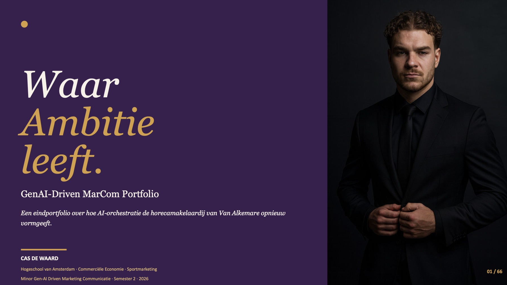
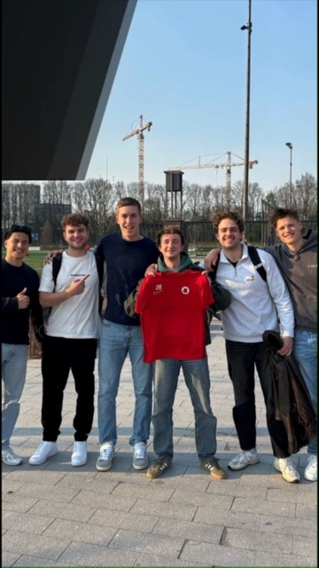
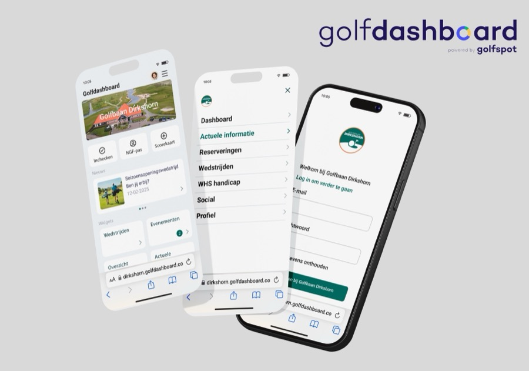
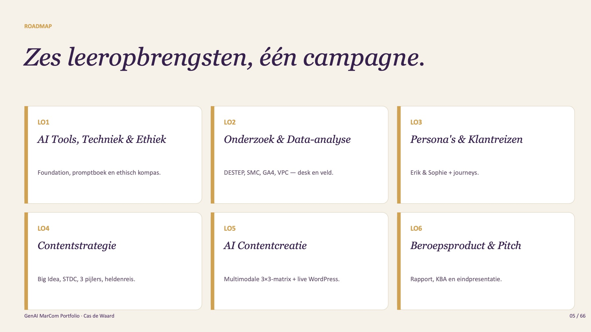
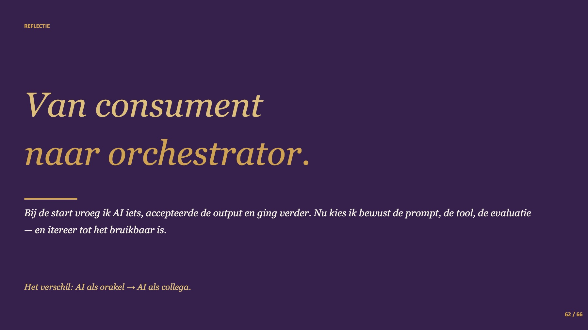
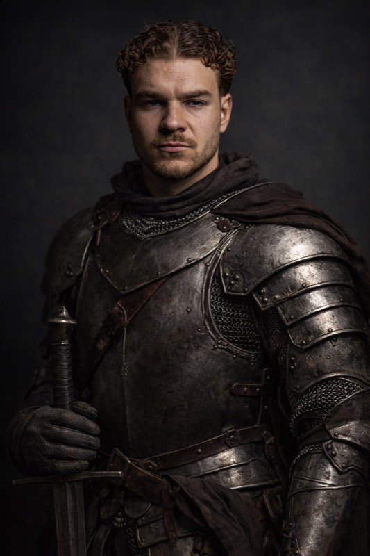

Ik maak beleving meetbaar.
Als ik terugkijk op mijn projecten, zie ik steeds hetzelfde terug: spel en beleving, onderbouwd met cijfers. Een driving range die een game wordt, een quiz die fans terugbrengt, gedrag dat je kunt sturen. Hieronder staat mijn sterkste werk.
Uitgelicht

Stage · bestuurTrackmanIs Trackman rendabel binnen vijf jaar?
Drie configuraties doorgerekend, een advies voor het bestuur en een compliment van de leverancier.
Bekijk case →
Minor · AIWaar Ambitie Leeft
Een campagne, een eigen AI-app en een AI-video voor een horecamakelaar.
Bekijk case →sturen
Gedrag begrijpen, dan pas sturen
Groene parkeervakken getest met een A/B-test, eerlijk over de grenzen.
Bekijk case →Meer werk

VideoWinactie voor een AFC-spits
Quiz, flyers en een video die ik monteerde.
Bekijk →Vrouwen
Meer publiek voor Ajax Vrouwen
Onderzoek en strategie, met een plek in de finale.
Bekijk →picture
Een game voor Mijn Ajax
Gamification die fans laat terugkomen.
Bekijk →gebouwd
Bouwen met AI
Een onderzoeksgame met dashboard, en deze site.
Bekijk →Is Trackman rendabel binnen vijf jaar?
- TypeRendementsonderzoek en advies, individueel
- PubliekGepresenteerd aan het bestuur
- VaardighedenCommercieel bewustzijn, kritisch denken
Systemen als Trackman en Toptracer maken van een driving range een soort game: je ziet de baan van elke bal op een scherm. Ik begon met een verkenning van Toptracer, maar al snel bleek Trackman beter bij de investering van de club te passen.
Mijn basis was de nulmeting van 2024: de omzet en het aantal verkochte emmertjes ballen op de range. Daar zette ik de offertes, de lease en de vaste lasten tegenover. Ik rekende drie configuraties door, van 10 overdekte bays tot 10 overdekte plus 16 mobiele, met een break-evenanalyse, drie bezettingsscenario's en een gevoeligheidsanalyse. Daarnaast belde ik met directeuren van andere golfbanen.
Mijn advies: begin met optie 1, 10 overdekte bays. Dat is de beste balans tussen kosten, risico en opbrengst. Uit de gevoeligheidsanalyse bleek bezetting de grootste hefboom: die heeft bijna drie keer zoveel invloed op de omzet als een kleine prijsverandering. Marketing om de bays vol te krijgen is dus belangrijker dan aan de prijs draaien. Ik presenteerde het onderzoek aan het bestuur. De club pakt het traject op zodra de overstap naar een nieuw boekingssysteem klaar is.
"This is good stuff. Well done."
Vicepresident van Trackman, over mijn onderzoek
Ook op mijn stage: leden mee in een nieuw systeem
De golfbaan stapte over op een nieuw ledenplatform: het Golfdashboard. Daarin regelen leden alles rond hun golfdag, van starttijden boeken tot hun gegevens beheren.
Een nieuw systeem werkt alleen als leden het ook gaan gebruiken. Ik schreef de ledenmails en een handleiding die stap voor stap met afbeeldingen uitlegt hoe je je account activeert en het dashboard als app op je telefoon zet. Met een collega maakte ik daarnaast video's voor social media, onder andere om de nieuwe kok voor te stellen.

Waar Ambitie Leeft
- OpdrachtgeverVan Alkemare Horecamakelaardij
- TypeStrategie, campagne en eindpitch, individueel
- Jaar2026
- ToolsClaude, Gemini, Google AI Studio, Veo
Van Alkemare is sinds 1986 gespecialiseerd in horecavastgoed. Twee ontwikkelingen maken de komende jaren het verschil: veel horeca-eigenaren worden ouder en willen hun zaak overdragen, en de doelgroep oriënteert zich steeds meer online.
Mijn antwoord is de campagne Waar Ambitie Leeft: één belofte voor twee doelgroepen. De eigenaar die zijn levenswerk wil overdragen en de ondernemer die haar eerste zaak wil overnemen, ontmoeten elkaar bij Van Alkemare.
De teaser
Twee verhalen, één merk. Sophie begint aan haar eerste zaak, Erik draagt zijn levenswerk over, en Van Alkemare verbindt ze. Ik maakte de teaser met AI-tools, in de huisstijl van de campagne en als staande video voor social media.
Drie bouwstenen, één campagne
Pand make-over app
Een eigen app in Google AI Studio die een leeg bedrijfspand met AI inricht, zodat een koper direct ziet wat er met het pand kan.
AI Studio-scripts
Systeeminstructies die van het model een vaste contentregisseur maken: elke afbeelding en video heeft dezelfde personages, context en stijl.
Vernieuwde website
Een concept waarin ondernemers op een kaart hun ideale locatie vinden.

Daaronder ligt een volledig rapport: DESTEP, concurrentie- en interne analyse met GA4, persona's en klantreis, contentbriefing, implementatieplan en een kosten-batenanalyse. Op LinkedIn testte ik twee posts met AI-beeld: samen 673 weergaven en meer dan 20 reacties. De tweede versie, met beter licht en meer sfeer, werd vier keer zo vaak aangeklikt.
Van prompt-noob tot orchestrator
In januari zei ik nog "OK" tegen alles wat AI teruggaf. In mei zette ik vijf modellen elk voor hun eigen taak in: Claude voor structuur, Gemini voor data en Veo voor beeld. De grootste les was weten wanneer mijn eigen oordeel beter is dan dat van het model.

"AI levert antwoorden. Ik lever de vraag, de context en het oordeel."↑ Terug naar overzicht
Uit mijn eindpitch
Gedrag begrijpen, dan pas sturen
- ModelB-MAP (Fogg)
- TypeGroepsadvies + individueel onderzoek
- Jaar2026
Felyx: netter parkeren
Rommelig geparkeerde deelscooters hinderen de doorgang. Met ons team ontwierpen we groene parkeervakken die samenvallen met de digitale zone, plus een app-melding op het parkeermoment. In een A/B-fototest (n = 20) steeg de duidelijkheidsscore van 2,3 naar 3,9 op 5. We presenteren dat eerlijk als perceptie, niet als gemeten gedrag, en adviseren eerst een pilot.
Op tijd slapen, op tijd uit bed
Hetzelfde model paste ik toe op mezelf. Mijn analyse: het probleem zat niet in motivatie, maar in mentale moeite en routine. Elke avond was het opnieuw een beslissing. Dat inzicht kwam later terug in mijn persoonlijkheidstests.
↑ Terug naar overzichtCentral Athlete: een winactie voor een AFC-spits
- KlantSpits van AFC
- TypeCampagne, groep van vier
- Mijn rolMede-uitvoering en montage van de video
Met vier studenten richtten we een eigen sportmarketingbureau op: Central Athlete. Onze eerste klant was een spits van AFC die zijn persoonlijke merk wilde versterken.
Ons idee: een winactie met een Kahoot-quiz over hem en zijn sport, met een gesigneerd shirt als prijs. We maakten de quiz, verspreidden flyers met een QR-code en reikten het shirt uit bij AFC. Zijn Instagram groeide in die periode van 1.245 naar 1.325 volgers. Geen enorme sprong, maar wel meetbaar, en we leerden dat bereik buiten je eigen kring de echte uitdaging is.
De video heb ik gemonteerd
Van planning tot uitreiking in anderhalve minuut. Monteren bleek iets wat ik echt leuk vind. In mijn reflectie schreef ik dat het editen van deze promovideo het onderdeel was waar ik het meest tevreden over was.
Daarna schreven we voor hetzelfde bureau een eventplan: de Old School Olympics, een sportieve afsluiting van het studiejaar met nostalgische spellen zoals zaklopen en touwtrekken, volledig zonder budget.
↑ Terug naar overzichtGuess the Picture: een game voor Mijn Ajax
- OpdrachtgeverAjax
- TypeGamification-campagne, individueel
- DoelgroepFans van 36 tot 55 jaar
De vraag: hoe krijg je fans vaker terug naar de Mijn Ajax-omgeving? Ik analyseerde de digitale strategie, de kanalen en de kernwaarden van Ajax en keek hoe Manchester City en AZ gamification inzetten. Daarna woog ik vier doelgroepen tegen elkaar af: fans, families, vriendengroepen en mensen die nog geen fan zijn.
Mijn keuze werd een kennisgame: Guess the Picture. Je ziet een wazige foto die langzaam scherper wordt, en wie het eerst het goede antwoord kiest, scoort het meest.
- Registreren: met je naam, e-mailadres en favoriete speler. Zo verzamelt Ajax data voor gepersonaliseerde content.
- Spelen: raad de foto, hoe sneller hoe meer punten. Het is kort en simpel, dus ook leuk voor wie niet van games houdt.
- Uitdagen: een leaderboard, je score delen en vrienden uitdagen. Dat past bij een doelgroep die graag van elkaar wint.
- Terugkomen: de beste score maakt kans op een officieel Ajax-shirt, en je rating zet je aan om fouten later goed te maken.
Waarom dit bij mij past: ik ben zelf fanatiek als er een score bij komt. Die drang om te winnen gebruikte ik hier als ontwerpprincipe.
↑ Terug naar overzichtMeer publiek voor Ajax Vrouwen
- OpdrachtgeverAjax
- TypeOnderzoeksrapport, groep van vijf
- ResultaatFinale tegen andere sportmarketingklassen
De hoofdvraag: hoe kan Ajax de kaartverkoop en fanbetrokkenheid bij Ajax Vrouwen vergroten met gerichte marketing en betere communicatie?
We onderzochten de interesses van supporters, de meest effectieve kanalen en content, en mogelijke ticketstrategieën, met onder meer enquêtes. Een belangrijke doelgroep bleek vrouwen van 26 jaar en ouder, die vaak ook bepalen wat een gezin in het weekend doet. Daarop bouwden we een strategisch plan.
Met ons advies haalden we de finale, waarin we het opnamen tegen groepen uit andere sportmarketingklassen. Daar ben ik trots op: een opdrachtgever die jouw werk goed genoeg vindt om mee te dingen naar de winst.
Ik leidde het deel van de focusgroep over marketing en communicatie rond de kaartverkoop. Mijn les: online komt een discussie moeilijk op gang. Een volgende focusgroep houd ik fysiek, en ik stel meer vervolgvragen in plaats van me aan mijn lijstje te houden.
↑ Terug naar overzichtBouwen met AI
- RolBedenker en regisseur
- HulpmiddelClaude
Ik ben geen programmeur, maar met AI kan ik wel bouwen wat ik nodig heb. Ik werk met Claude Code in de terminal en in Visual Studio Code: ik bedenk wat het moet doen, test het en stuur bij, en de AI schrijft de code. Voor mij is AI een slimme assistent die me helpt om dieper in mijn interesses te duiken, op school en daarbuiten.
"Hoor je dit nog?"
Ook hier weer een spel: een game voor een onderzoek, waarbij de antwoorden van spelers automatisch in een Google Sheet met dashboard terechtkomen. Zo verzamelde ik data op een manier die deelnemers leuk vonden.
Een eigen AI-assistent
Een persoonlijke assistent die lokaal op mijn laptop draait, om mijn studie en projecten te organiseren.
Sleutelen uit nieuwsgierigheid
Ook buiten school ben ik bezig met techniek. Zo schrijf ik met AI eigen scripts voor mijn telefoon, gewoon omdat ik wil weten hoe het werkt.
Mezelf, door AI
Tijdens de minor Gen-AI experimenteerde ik met beeldgeneratie, ook op mezelf. Het resultaat: een ridder en een zakenman. Met een knipoog, maar het laat wel zien hoe ver je met de juiste prompts komt.

Deze website
Mijn vorige portfolio maakte ik in Wix. Dit portfolio heb ik met AI zelf in code gebouwd. De inhoud en de keuzes zijn van mij; de AI was de bouwer.
↑ Terug naar overzichtMeer uit vier jaar CE
- Alkmaar SportProject 9: hoe trekt zwembad Hoornse Vaart meer bezoekers? Het project loopt nog en valt onder geheimhouding.
- Tournify in PolenProject 8: een internationale marktverkenning met een advies voor markttoetreding. In een groep.
- Citymarketing VendéeProject 8, individueel: een evenement als strategisch marketinginstrument voor een Franse regio.
- House of SportsMarketingonderzoek met Hidde Lageveen: probleemanalyse, onderzoeksopzet en statistiek in SPSS.
- Botic × MelkunieProject 5, individueel: waarom passen een tennisser en een zuivelmerk bij elkaar? Mijn eerste kennismaking met sponsoring.
Hoe ik me ontwikkel
Reflectie, testen en feedback.